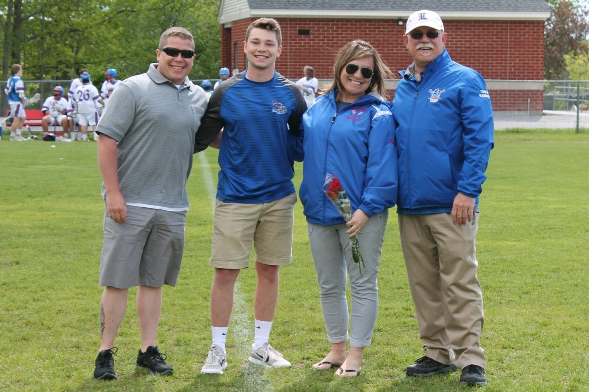

In highschool I played varsity football for three years until my junior year of highschool when I tore my meniscus and partially my ACL, because of this I chose not to play again out of fear. However, I played both offense and defense, but started on defense because I was better at playing Safety.
When football season ended I found myself running track in the winter. I never liked running for long distances so I opted to sprint the 50 meter dash instead. I liked running track because it helped me get faster for when football season rolled back around.

During my senior year I was asked to manage the varsity lacrosse team. My job entailed taking stats for the team, equipment logistics and making sure the games were being filmed by someone in the film crew.